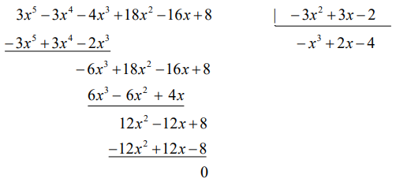
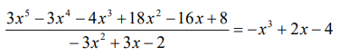
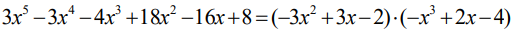
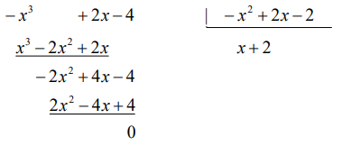
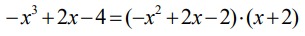
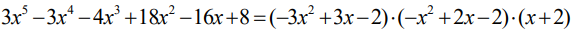

1. Factorización de un polinomio
|
La descomposición factorial de un polinomio consiste en expresar un polinomio como producto de otros polinomios de menor grado. A la descomposición factorial de polinomios también se la denominada factorización de polinomios.
Decimos que un polinomio es reducible si admite una factorización mediante polinomios de grado inferior al suyo. En caso contrario el polinomio será irreducible.
|
Como hemos visto, tal y como ocurre con la división entera, la división de polinomios también puede ser exacta, es decir, el resto puede ser el polinomio cero.
Ejemplo:

En este caso diremos que el polinomio divisor, Q(x) divide al polinomio dividendo, P(x), y podemos escribir:

o si optamos por una igualdad polinómica:

Observamos que el haber obtenido como resto el polinomio 0 nos permite expresar el polinomio dividendo, P(x), como producto de otros dos polinomios, los polinomios divisor y cociente, Q(x) · C(x) . Hemos alcanzado una factorización del polinomio P(x), o una descomposición en factores de P(x).
En general, un polinomio concreto puede ser factorizado, o descompuesto, por medio de diferentes grupos de factores. Si continuamos con el polinomio P(x) anterior, una manera de obtener una descomposición alternativa consiste en, a su vez, alcanzar una factorización de alguno de los polinomios Q(x) o C( x) .
Ejemplo:

En efecto, la división es exacta y ello nos lleva a la siguiente igualdad:

Si la trasladamos a la descomposición que teníamos de P(x):
